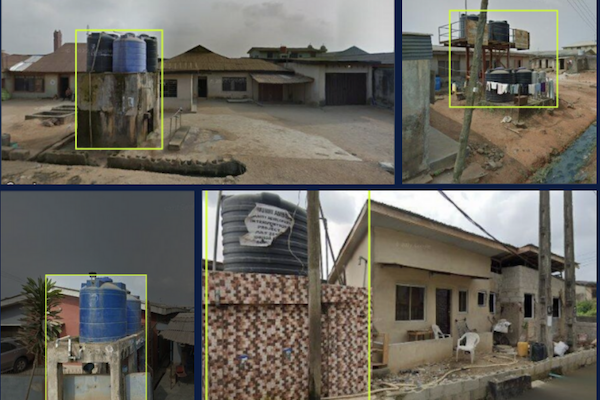
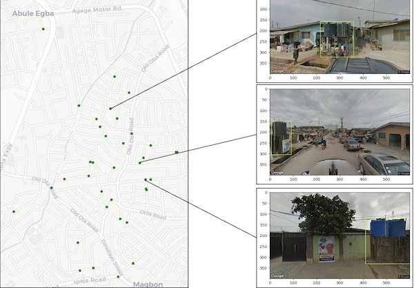

Neil Patel
Urban Economist · Water Security & Climate Adaptation



Citation: Neil Patel. "A Deep Learning Approach to Water Point Detection and Mapping Using Street-Level Imagery." Water Practice and Technology 19, no. 9 (September 1, 2024): 3485–3494. https://doi.org/10.2166/wpt.2024.197.
Households in developing countries often rely on alternative shared water sources that exist outside of the datasets of public service providers. This poses a significant challenge to accurately measuring the number of households outside the public service system that use a safe and accessible water source. This paper proposes a novel deep learning approach that utilizes a convolutional neural network to detect water points in street-level imagery from Google Street View. Using a case study of the Agege local government area in Lagos, Nigeria, the model detected 36 previously unregistered water points across a variety of urban settings and obstruction levels with 94.7% precision. The paper was developed through the support of Prof. Carlo Ratti and the MIT Senseable City Lab.
I supported the Philippines' national water agency (DENR-WRMO) to adapt and utilize this methodology to identify barangays without Level III systems for a modular desalination pilot.